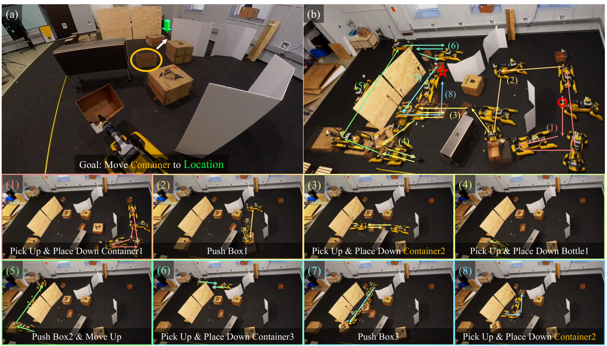
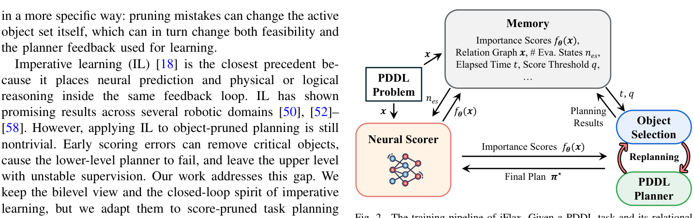
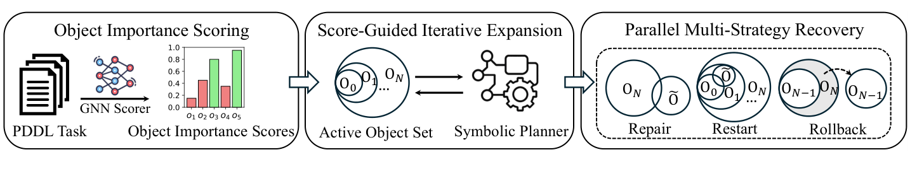
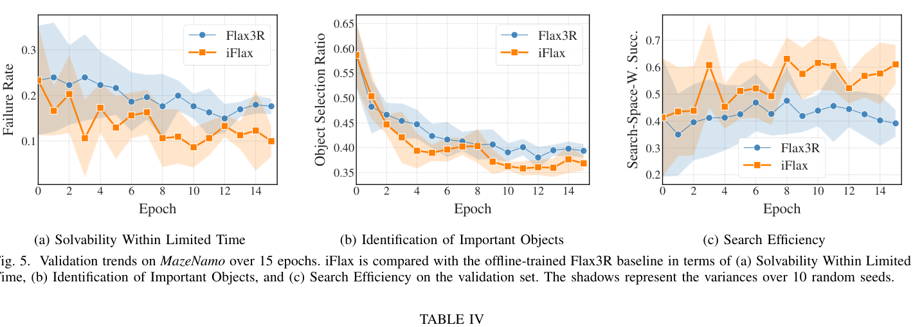
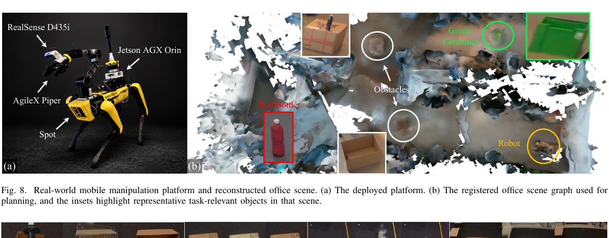
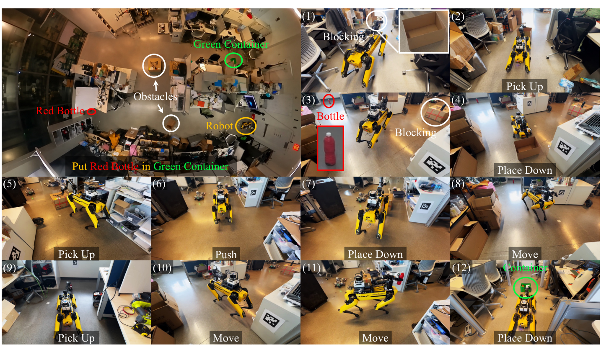

神经符号学习
双层优化
物体剪枝
长时程任务规划
arXiv 2606.06877 · 2026-06
iFlax：复杂逻辑约束下长时程任务规划的神经符号学习
Neuro-Symbolic Learning for Long-Horizon Task Planning Under Complex Logical Constraints
Qiwei Du, Zitong Zhan, Shaoshu Su, Bowen Li, Yi Du, Zhipeng Zhao, Taimeng Fu, Sebastian Scherer, Jiaoyang Li, Chen Wang · University at Buffalo SAIR Lab / CMU
一句话总结： 长时程任务规划里，神经符号方法靠学习"物体重要性分数"剪枝无关物体来加速，但通常用全搜索空间离线生成的固定监督 训练打分器，部署时却在自己预测诱导的剪枝空间 里运行，产生 exposure bias（暴露偏差） 。本文把物体重要性学习形式化为 imperative learning 的双层优化 ：上层优化神经打分器、下层在分数剪枝空间里解符号规划，并引入 3R 策略 （并行 Repair / Restart / Rollback 恢复）稳定训练。三个基准上达到 SOTA，MazeNamo 上失败率降 80.04% 、规划时间降 57.14% 。
① 摘要解读
② 背景与动机
③ 双层优化方法
④ 3R 恢复策略
⑤ 实验设置
⑥ 结果与分析
⑦ Insights
⑧ 链接
01 摘要解读任务规划在机器人必须推理长时程动作序列、且受复杂逻辑约束（物体可供性、空间关系、顺序动作依赖）时，遭遇严重效率瓶颈。近期神经符号方法靠学物体重要性分数 剪枝任务无关物体来提速，但通常依赖全搜索空间离线生成的固定监督 ，造成训练-测试不匹配 ：部署时规划器在模型自己（可能不完美的）预测诱导的剪枝空间里运行，导致暴露偏差、规划性能退化。
为应对这一挑战，本文把物体重要性学习形式化为 imperative learning 的双层优化 ：上层优化神经打分器，下层在分数剪枝的搜索空间里解符号规划。为稳定学习，在下层规划引入 3R 策略 ——并行 Repair / Restart / Rollback 恢复，提供可靠的自适应反馈给上层。三个挑战性基准上达到 SOTA：失败率降 80.04% 、规划时间降 57.14% ；并在四足移动操作机器人上做了仿真与真机验证。
-80.04%
MazeNamo 失败率（相对 Flax）
-57.14%
MazeNamo 加权规划时间（相对 Flax）
3R
Repair / Restart / Rollback 并行恢复
3 基准 + 真机
MazeNamo / SokoMindPlus / LogisticsPlus + Spot 四足
02 研究背景与动机（Introduction）长时程规划的组合爆炸
移动操作里"送一杯饮料"可能要导航到厨房、定位抓瓶、运到桌边、搬开挡路的障碍——这些动作还要满足复杂逻辑约束：物体可供性 （瓶子可抓不可推）、空间关系 （瓶子可放箱上，反之不可）、顺序依赖 （推箱子前须先移开上面的瓶子）。物体与约束越多，符号搜索空间组合增长，成为真实应用的效率瓶颈。例如 LAMA 规划器解一个 15×15 的 MazeNamo 任务需超 100 秒。
物体剪枝路线及其隐患
近期神经符号方法（PLOI、Flax）学物体重要性分数、按预测重要性排序、只对最重要物体逐步展开规划，可大幅加速（如 Flax 把 15×15 MazeNamo 从 100+ 秒降到约 24 秒）。但不完美的分数可能漏掉关键物体或纳入无关物体 。
核心洞见：暴露偏差（Exposure Bias）
现有方法用
全搜索空间离线生成的固定监督 训练打分器，但测试时规划器在
打分器自己预测诱导的剪枝空间 里运行。训练与测试的输入分布不同——长时程下，即使很小的打分误差也会随展开逐步累积，导致低效搜索或找不到可行解。解法：让打分器
在自己创造的剪枝空间里被训练 ，把符号规划器放进学习回路。
三大贡献
iFlax ：把物体重要性学习形式化为双层优化，用自适应伪监督克服暴露偏差；3R 策略 ：下层符号规划器里并行 Repair / Restart / Rollback 恢复，稳定双层优化；验证 ：三个基准 SOTA + 四足移动操作机器人的仿真与真机部署。

图 1：长时程任务规划。"把容器移到目标位置"须满足关于易碎瓶、轻容器、重箱、单物体操作的复杂逻辑约束。(a) 目标图；(b) 执行轨迹关键帧 (1-8)，一个任务需 51 个有序技能，每个技能含多步（抓容器需靠近、坐下、检测、抓取、站起、失败重试）。
03 方法 I：双层优化公式给定 PDDL 任务 τ = ⟨O, I, G⟩，目标是剪枝物体 ：保留可行计划所需的任务相关物体、过滤无关物体以保持符号搜索可解。把规划与剪枝联合建模（而非孤立预测）：
minθ U(f(θ,x), m)， mi = 1[ oi ∈ O(π*) ] s.t. π*, ν* ∈ arg minπ,ν L(x, f(θ,x), π, ν)， ξ(M(ν)) ≤ 0
上层 ：神经打分器 fθ 把任务关系图 x 映射到每个物体的重要性分数；目标 U 是 BCE 损失，鼓励给最终计划里出现的物体更高分；下层 ：符号规划器在分数剪枝空间里找可行计划 π*，把计划里用到的物体标为正样本（伪标签掩码 m），反馈给上层。

图 2：iFlax 训练流水线。给定 PDDL 任务与关系图 x，神经网络预测物体重要性分数；下层规划器在分数剪枝空间运行并返回可行计划，提供自适应伪监督更新打分器。
3.1 上层：关系图网络打分器
把 PDDL 任务编码为有向多重图 ：每个物体一个节点（特征 = 类型 one-hot + 初始/目标里一元谓词的 multi-hot），物体间二元关系连边（边特征 = 谓词类型 multi-hot + 来自初始/目标/两者）。用 encode-process-decode 图网络：编码器映射节点/边特征到隐向量，处理器做 K 轮消息传递，解码器把每物体嵌入转成标量重要性分数。物体中心的表示使同一网络能天然处理不同物体数的任务实例。
3.2 下层：分数引导的迭代展开
下层在固定时间预算 T1 内解由"活动物体集"构造的剪枝符号任务：从目标里出现的物体 O₀ 出发，按分数阈值 q 逐步加入高分物体；若简化任务被证明不可解，就把阈值衰减 γ 倍、加入下一批高分物体。这样搜索按打分器建议的顺序增长，而非一开始就投入完整组合空间。
04 方法 II：3R 并行恢复策略在线双层优化的难点在于早期不稳定：打分器尚不可靠时，剪枝空间可能漏关键物体或混入误导物体，导致下层规划器找不到可行解、无法返回有意义的反馈，训练进入"差分数→规划失败→监督更少→分数更差"的恶性循环。3R 用三种并行恢复分支（各占时间预算 T2）覆盖三种典型失败模式：

图 4：iFlax 规划流水线。打分器预测物体重要性分数 → 分数引导的迭代展开 → 若搜索卡住，并行启动 Repair / Restart / Rollback 恢复。
Repair（修复局部遗漏） ：解松弛版 全任务得粗略计划 π̃，提取其中物体 Õ 补进当前活动集，再用互补规则恢复相关上下文（如 MazeNamo 里障碍与其占据的格子要一起加）。针对"漏了关键物体"；Restart（重建活动集） ：从松弛计划 Õ 出发丢弃被污染的活动集 、重建一个更小更干净的基础集，再做迭代展开。针对"活动集被无关物体塞爆"；Rollback（回退） ：从当前活动集 O_N 退回 O_{N−1}，改为逐个 加入物体（而非整批），贴近"可解性边界"继续展开。针对"一次性加太多物体导致的过展开"。
松弛规则只需"够用"，不需"完美"
松弛规则（如 MazeNamo 移除所有轻障碍、LogisticsPlus 解锁所有上锁枢纽）只需简化任务、保留足够因果结构来指示哪些物体可能重要。消融显示：不同松弛规则（RR1–RR5）都比不松弛的 PLOI 好，但规则质量仍影响结果（RR1 失败率 6.8% vs RR2 16.7%）——
有用但不必完美 。
训练时，若多分支都返回可行计划，取评估状态数最少 的那个（稳定监督、免受硬件时序抖动影响）；部署时任一分支 先成功即终止（并行早停，快且可靠）。
05 实验设置三个基准
基准 特点 训练/测试规模 MazeNamo 密集障碍重排，异构操作可供性 200 个 8×8 训练 → 10/12/15×15 × 四难度 SokoMindPlus 长、不可逆的推箱依赖（更难 Sokoban） 200 个 10×10 → 15/18/20×20 LogisticsPlus 图结构城市的运输调度（本文提出的更难版 Logistics） 200 小实例 → 20 大实例（5 城市、上锁枢纽、钥匙）
评估指标
Failure Rate（FR） ：时间预算内未解的实例占比；Weighted Planning Time（WPT） ：平均规划时间（未解实例计满时间预算）；OSR（Object Selection Ratio） ：最终任务物体数 / 原始物体数（越低越精简）；SSP（Search-Space-Weighted Success） ：成功且搜索空间接近最小所需空间的程度（越高越不浪费搜索）。
对比方法
方法 说明 LAMA 经典 SOTA 符号规划器（Fast Downward，lama-first） PLOI 离线学物体相关性，预测哪些物体进简化问题 Flax 前 SOTA：物体级相关性 + 基于松弛计划的单步恢复 iFlax（本文） 双层优化 + 自适应伪监督 + 3R 恢复
公平起见：所有神经方法用同一网络架构、同一机器（AMD Ryzen 9 7950X + RTX 4090）训练测试；PLOI/Flax 训 300 epoch，iFlax 训 20/10/50 epoch（MazeNamo/SokoMindPlus/LogisticsPlus）。
06 实验结果与分析6.1 MazeNamo：失败率 -80.04%、规划时间 -57.14%
iFlax 在全部 12 个评估设置上保持领先。最难 15×15 expert 任务上，FR 从 39.3% 降到 6.8% 、WPT 从 23.77s 降到 7.77s ——iFlax 改进的正是最关键的能力：尽早找到少数"重排关键"障碍，使接地问题保持小而不再移除后续会变必要的物体 。
6.2 SokoMindPlus 与 LogisticsPlus
SokoMindPlus：平均 FR 从 58.7% 降到 35.3%、WPT 从 70.72% 降到 52.20%（相对 Flax）；即便多数物体相似、早期错误难以逆转，iFlax 仍能保住"决定可解性"的因果物体集；
LogisticsPlus（大 train-test 差距：训练 2 城市 → 测试 5 城市）：FR 从 36.9% 降到 10.9% 、WPT 从 20.52s 降到 13.08s——证明同一训练与恢复原则不局限于几何障碍域，也适用于路线/车辆/堆叠/锁/钥匙之间的符号耦合。
6.3 消融：双层优化与 3R 各自的价值
变体 含义 平均 FR WPT Flax 基线（离线固定监督 + 单步修复） 14.0% 32.14% Flax3R Flax + 3R 恢复 8.6% 21.88% iFlax w/o 3R 双层优化但无 3R 12.3% 26.59% iFlax（完整） 双层优化 + 3R 2.8% 13.78%
双层优化单独 （Flax vs iFlax w/o 3R 的在线对比）已把 FR 从 8.6% 降到 2.8% 趋势（Fig.5a FR 曲线更快下降且平台期更低），证明自适应伪监督确实弥合了训练-测试不匹配；3R 单独 （Flax vs Flax3R）把 FR 从 14.0% 降到 8.6%；两者叠加 才到 2.8%——单靠自适应监督不够（无 3R 时更脆、更难实例上退化），单靠 3R 也不够，二者互补。

图 5：MazeNamo 上 15 epoch 的验证趋势，对比 iFlax 与离线训练的 Flax3R：(a) 限时可解性 (b) 重要物体识别（OSR）(c) 搜索效率（SSP）。iFlax 失败更少、保留更少无关物体、搜索开销更小。
6.4 各恢复分支的贡献（Table VI）
统计各阶段最终解决的任务数：初始迭代展开直接解决了绝大多数（MazeNamo 17,030）；一旦卡住，3R 就变得关键——Restart 贡献最大 （MazeNamo 2,601、SokoMindPlus 566），因为重置活动集能可靠逃离严重的搜索空间污染；Rollback 次之（各域 781/258/269），体现"贴近可解性边界"的保守回退价值；Repair 贡献少但处理局部遗漏时仍有用。
6.5 仿真与真机部署

图 8：真机移动操作平台与重建的办公室场景。(a) 部署平台（Spot 四足 + Jetson AGX Orin + AgileX Piper 机械臂 + 腕部 RealSense D435i）；(b) 用于规划的已配准办公室场景图。
Isaac Sim ：引入额外逻辑约束（容器只能放地面、高容器须站起抓、矮容器须坐下抓）的长时程任务，iFlax 仅用 MazeNamo 训练，仍在同时间预算内解决 96% 任务；真机（Spot 四足） ：用 XRSLAM + Hydra 重建场景图、WildDet3D 估 3D 包围盒、MoveIt 2 做无碰撞规划，在杂乱办公室与仓库环境执行长时程移动操作。仓库导航任务平均 0.92s 得到规划结果。

图 10：真实办公室任务执行序列——目标"把红瓶放进绿容器"，机器人须先移开挡路的容器、抓瓶、推箱清场、放瓶、再转运目标瓶（(1)–(12)），展示了 iFlax 对"过程性障碍管理"而非仅最终布置的推理能力。
07 核心 Insights
1. 暴露偏差是物体剪枝方法的"隐性杀手"
用全空间离线标签训练的打分器，从未见过自己剪枝空间里的错误。把符号规划器放进学习回路、用
自适应伪监督 （计划里用到的物体=正样本）训练，让打分器直接面向部署分布学习。
2. 在线双层优化的"稳"是难点，不是"优"
早期打分不可靠 → 剪枝漏关键物体 → 规划失败 → 监督更少 → 分数更差，是恶性循环。3R 的价值不在"更快找到解"，而在
让下层在不可靠剪枝下仍能返回有意义反馈 ，从而让在线训练走得通。
3. 三种失败需要三种不同的"药"
漏物体要补（Repair）、活动集污染要重建（Restart）、加太猛要回退（Rollback）。
并行启动、任一成功即停 的设计既覆盖了主要失败模式，又避免了串行诊断的时间浪费。
4. 松弛规则"有用即可，不必完美"
松弛只需简化任务、保留粗略因果骨架来指示重要物体。不同松弛规则都优于不松弛，但质量仍有差异——这是把领域知识"轻量"注入恢复机制的低成本方式。
5. 物体中心的关系图打分器天然跨规模泛化
encode-process-decode 的图网络以物体为节点，同一网络能处理不同物体数的实例——这是 iFlax 能在"2 城市训练 → 5 城市测试"的 LogisticsPlus 大 train-test 差距下仍有效的原因。